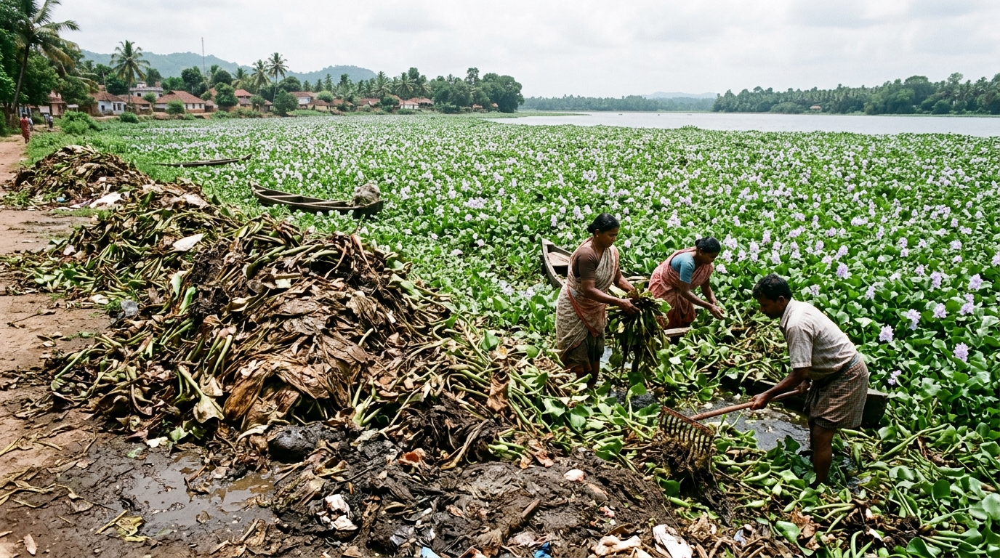

01

Aquatic Ecological Hazard
Invasive Water Hyacinth causes environmental problems and is largely underutilized.
Rapid, unchecked infestation of invasive water hyacinth (Eichhornia crassipes) chokes inland rivers and agricultural water reservoirs, disrupts freshwater ecosystems, depletes dissolved oxygen, and requires expensive manual harvesting. Despite containing high-tensile lignocellulosic fibers, millions of tons of harvested biomass are discarded on riverbanks with virtually zero value-added utilization.
TARGET
Biomass valorization & nanocellulose extraction